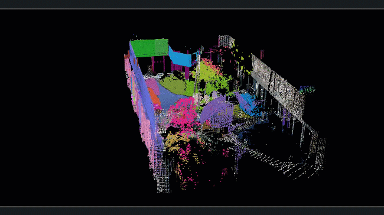
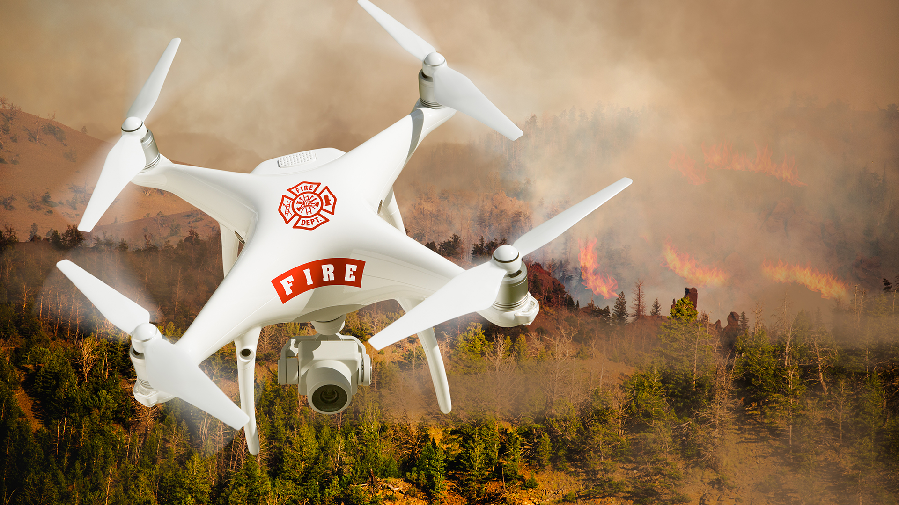
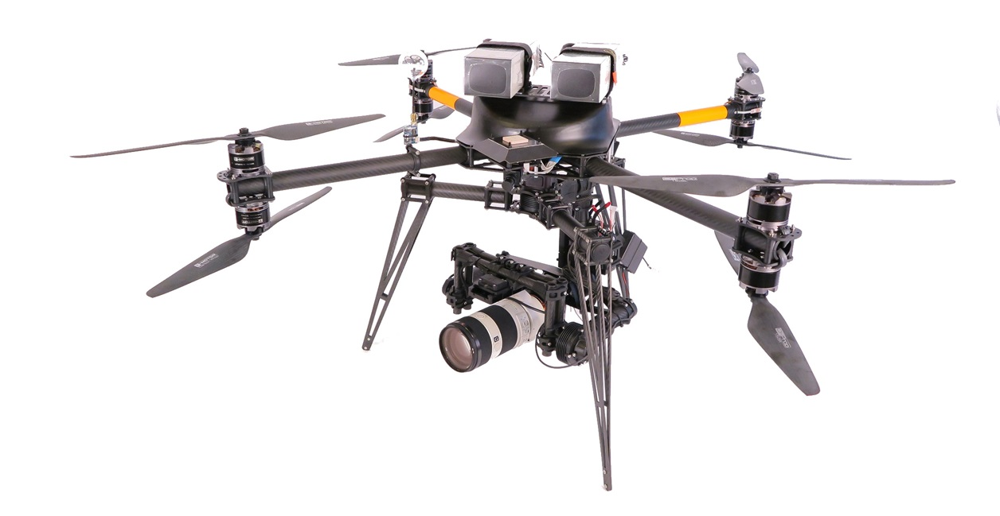

Logo
F1
SJB Institute of Technology
Robotics & AI-Powered Drones
F2
F3
Team Details
Team Number: 12- Puneet Gangur 1JB25CS133
- Rivesh Kumar 1JB25CS147
- Rishikesh Kumar 1JB25CS146
- Pranav S.H 1JB25CS123
Presented To:
Faculty Guide / Instructor
[Teacher's Name]
Department of Computer Science
Robotics & AI Drones
Intelligence in Motion
Scroll to explore
Intro to Robotics
Robotics involves machines designed to sense, process information, and act in the physical world. It is the intersection of mechanical engineering, electronics, and computer science.
1. Sensors (Sensing)
Cameras, LiDAR, ultrasonic sensors, GPS, gyroscopes, and tactile sensors allow the robot to gather data about its environment.
2. Control Systems (Processing)
Onboard computers and microcontrollers that process the sensory input and decide what actions the robot should take.
3. Actuators (Acting)
Motors, robotic arms, propellers, and hydraulics that allow the robot to physically interact with the world.
Modern Industrial Robotic Arm
Name it: robotic-arm-factory.jpgTraditional vs AI Robotics
Robotics existed long before AI. Not every robot is "intelligent." Understanding the difference is crucial.
Traditional Robots
- Follow fixed, hard-coded programmed instructions exactly as written.
- Operate exclusively in strictly structured, highly predictable environments.
- Repeat predefined tasks flawlessly but blindly. Cannot handle edge cases.
- Require human intervention to recover from any errors.
AI-Enabled Robots
- Learn from massive amounts of data and past experiences.
- Adapt dynamically to changing, unpredictable conditions in real-time.
- Recognize objects semantically and make decisions under severe uncertainty.
- Capable of autonomous error recovery and path re-planning.
Intro to Drones
Unmanned Aerial Vehicles (UAVs)
Drones are simply flying robots. However, just like robotic arms, not all drones are AI-powered.
Basic Systems Rely On:
- Flight controllers: PID loops to keep the drone level.
- Sensors: Gyros & Accelerometers for stabilization.
- Navigation: GPS to follow basic coordinate waypoints.
- Logic: Simple 'If X, then Y' telemetry rules.
Try the demo: This represents standard automation. The drone strictly follows the path you draw, with no intelligence regarding obstacles.
What Makes a Drone AI-Powered?
True AI in drones involves Machine Learning and Computer Vision models running natively on edge compute devices.
Perception
- Object detection & Tracking of moving targets.
- Facial recognition for security applications.
- Terrain & Semantic recognition of the ground below.
Autonomy
- Navigation in unknown, GPS-denied environments.
- Dynamic, real-time obstacle avoidance.
- Swarm coordination among multiple units.
Optimization
- Predictive maintenance using telemetry data.
- Learning-based flight optimization for battery life.
- Target prediction algorithms in defense.
Robotics as an AI Application
"Without AI, many robots are merely automated machines executing scripts."
1. Perception
Understanding the world. Turning raw sensor data (pixels, point clouds, ultrasonic waves) into semantic understanding using neural networks.
2. Decision-Making
Planning actions in real-time. Evaluating multiple probabilistic outcomes simultaneously and choosing the optimal path or mechanical action.
3. Adaptability
Learning from mistakes. Continuously adjusting to wind shear, broken components, or suddenly appearing unmapped obstacles seamlessly.
Core AI Technologies
1. Computer Vision & Deep Learning (CNNs)
Using multi-layered neural networks to interpret visual data from cameras. Essential for Object Detection, Instance Segmentation, and Self-driving perception systems. This allows a drone to know a "car" is a car.
2. Machine Learning Algorithms
Algorithms that improve through structured experience. Widely used for Path Optimization, Predictive Maintenance, and processing telemetry data to optimize battery usage mid-flight.
3. Reinforcement Learning
Learning through rewards and penalties in massive simulations before real-world deployment. Crucial for teaching Walking robots (like quadruped dogs) how to balance, and teaching drones complex agile navigation through dense forests.
4. Sensor Fusion (Note of Caution)
Combining data from Cameras, LiDAR, GPS, and IMUs for a cohesive view.
Note: Often mislabeled as AI by marketing teams. Filtering algorithms (like Extended Kalman Filters) are advanced mathematics and engineering, not inherently Artificial Intelligence.
AI vs. Automation in Drones
Distinguishing between programmed logic and machine intelligence.
| Capability / Feature | Classification | Underlying Technology |
|---|---|---|
| GPS Waypoint Navigation | NOT AI | Geographic Coordinates & PID Controllers |
| Return-to-Home Systems | NOT AI | GPS logging & straight-line vector math |
| Obstacle Detection & Avoidance | AI | Trained ML models interpreting LiDAR/Vision point clouds |
| Human / Vehicle Recognition | AI | Convolutional Neural Networks (YOLO, ResNet) |
| Autonomous Target Tracking | AI | Vision-based tracking algorithms updating flight paths dynamically |
Drone Mapping
What is NOT AI:
- Photogrammetry: Stitching images based on overlap using math.
- SLAM: (Simultaneous Localization and Mapping) - mostly computational geometry.
- Gaussian Splatting: Advanced 3D rendering mathematics.
How AI Enhances Mapping:
- Terrain Classification: Automatically labeling water, vegetation, roads based on visual cues.
- Structure Detection: Identifying buildings or micro-fracture roof damage from the mapped data.
- Semantic Interpretation: Understanding what the map actually contains, not just its 3D shape.

Semantic 3D Analysis Map
Name it: semantic-mapping-drone.gifApplications of AI Drones

Precision Agriculture
Crop health monitoring & disease detection via multispectral AI Vision. Automatically determining optimal irrigation.
Note: Spraying is automation; knowing *where* to spray is AI.

Disaster
drone-disaster...Disaster Management
Autonomous search and rescue in unmapped, hazardous areas. Using thermal imaging combined with AI survivor detection algorithms to find humans in rubble.
Delivery
drone-delivery...Delivery Logistics
Autonomous medical and package delivery over dense urban areas. AI is required to identify safe drop zones and avoid moving obstacles like birds and power lines.

Inspection
drone-inspect...Infrastructure Inspection
AI-based micro-crack or corrosion detection on massive bridges, high-voltage power lines, and oil pipelines, replacing dangerous human labor.
Industrial Ground Applications
Manufacturing Floor
industrial-manufacturing.jpgManufacturing
- Heavy assembly, precision welding, fast packaging.
- AI Focus: Real-time defect detection using 8K vision systems and predictive maintenance on the robot arms themselves.
Automated Warehouse
industrial-warehouse.webpWarehousing & Logistics
- Autonomous Mobile Robots (AMRs) moving pallets.
- Drone-based overnight inventory scanning.
- Real-world: Amazon robotics are mostly centrally orchestrated, but utilize AI for routing thousands of robots without collision.
Mining Environment
industrial-mining.webpHazardous Environments
- Deep mining and underground operations.
- Robots used in toxic, radioactive, or extreme heat areas.
- AI-assisted SLAM navigation where GPS entirely fails.
Defense & Swarm Systems
Defense Applications
- Stealth reconnaissance and high-altitude surveillance.
- Extensive border patrol over hundreds of miles.
- Autonomous navigation in heavily GPS-jammed/denied warzones.
- Threat detection, friend-or-foe classification using IR vision.
Swarm Drones
Coordinated drone behavior where multiple units act as a single cohesive neural network. True swarm intelligence relies on AI to decentralize decision-making, allowing the swarm to dynamically adapt, share data, and reorganize itself instantly if individual units are shot down or lose communication.
Ethical & Social Concerns
Autonomous Weapons
The profound moral implications of machines making lethal decisions without human intervention. Who is responsible for collateral damage caused by an algorithm?
Civilian Privacy
Widespread drone surveillance and facial recognition capabilities intruding on daily life and personal liberties, potentially leading to authoritarian overreach.
Decision-Making Risks
The "Black Box" problem: Inability to easily explain why a complex AI model made a specific, potentially harmful choice, making auditing extremely difficult.
Cybersecurity Threats
Vulnerability to hacking, GPS spoofing, and data theft. Ambiguous accountability in cases where a hijacked drone causes a critical system failure.
Limitations & Challenges
Despite the massive hype, AI robotics currently face severe real-world physical and computational constraints.
Hardware & Power
Battery density limits flight times to 30-40 minutes. On-board AI compute (GPUs/TPUs) drains power extremely rapidly compared to basic flight controllers.
Environment Dependencies
High weather dependency. Wind affects mechanical stability, and rain, fog, or dust severely impairs optical visual sensors and LiDAR.
Data & Edge Cases
Requires immense, perfectly labeled training data. Unexpected "edge cases" in the real world lead to unpredictable behavior or catastrophic false detections.
"AI does not replace robotics —
it enhances robotics
by enabling machines to perceive, learn, and make decisions in complex environments."
Thank You
A presentation by PABIT Online Services